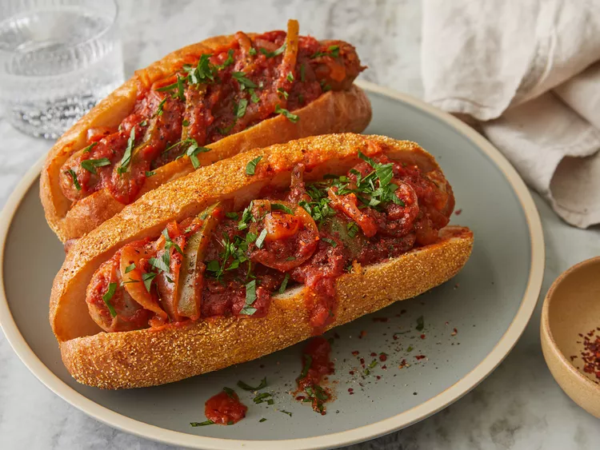

Slow Cooker Sausage with Sauce

Description
A crockpot sausage meal, made even easier in a slow cooker. Serve over rice or in sandwiches
Ingredients
- 8 (4 ounce) links fresh Italian sausage
- 1 (26 ounce) jar spaghetti sauce
- 1 green bell pepper, seeded and sliced into strips
- 1 onion, sliced
- 6 hoagie rolls, split lengthwise (Optional)
Steps
- Gather all ingredients.
- Place Italian sausage links, spaghetti sauce, green pepper, and onion into a slow cooker; mix until well combined.
- Cover and cook on Low for 6 hours. Serve on hoagie rolls.